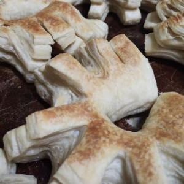

Bienvenidos a nuestra primera página oficial web de CHOUX, LA PASTELERIA, cositas ricas. Estamos dando nuestros primeros pasos en la web, buscando que nuestros clientes de cada dia y los nuevos que vendrán, puedan conocernos mucho más y explorar el local desde sus hogares o trabajo. Además, aventurarse en las cositas ricas que podes encontrar cada dia e inclusive, hacer tu pedido!!

Masitas secas y finas, alfajorcitos de maicena y de chocolate, cañoncitos, palmeritas y cuernitos de hojaldre, anillitos de vainilla con chocolate y más son algunas de las opciones para compartir que tenemos para ofrecerte!!

Chessecake, Lemonpie, Brownies y Tortas Clasicas son nuestras selecciones de postres más pedidas por los clientes. Además, podemos solicitar tortas más grandes si es un evento especial. También tenemos tartas dulces de diferentes sabores.

En mostrador, siempre podras encontrar opciones saladas como sandwiches de miga de jamón y queso, aunque si necesitas de otros gustos podes hacer tu pedido con anticipación y con placer te lo preparamos!! También, realizamos sandwiches de pan común y medialunas rellenas.

Si buscas panificados, producimos de manera artesanal, flautas y baguettes. Además, figazas chicas y grandes de manteca, pancitos de salvado, pancitos saborizados de jamón, queso y salame, pebetitos y pebetes. También, la especialidad de la casa, las famosas "Cuadraditas", las más elegidas y buscadas!!